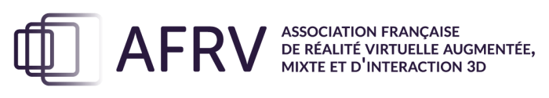
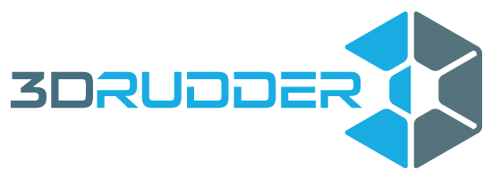
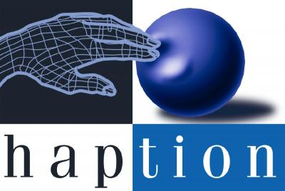
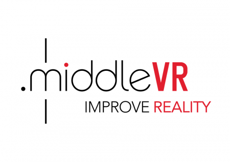
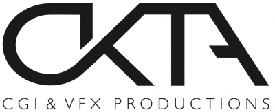

Silver Level

AFRV stands for French Association for Virtual Reality, Mixed Reality and 3D interaction.
Founded in 2005 by a dozen researchers and industry executives, this non-profit organization aims to gather the French community, academic and industrial, around these themes. Its mission is to promote and encourage the development of virtual reality, augmented reality, mixed reality and 3D interaction in all aspects: education, research, studies, developments and applications ; in order to provide a means of communication between people interested in this area ; and recognition of this community by French, European and International institutions.
Art Graphique & Patrimoine combines digital technology and creativity to the development of cultural heritage: scanning and 3D modeling, virtual images, Augmented Reality, mobile applications, 360° and webshare, immersive 3D contents, multimedia.
With a rich expertise acquired over 20 years through historical monument survey, our company is now the leader in 3D modeling and Augmented Reality market applied to cultural heritage with a first international award (WSA -ONU) for its application "Jumièges 3D".
AGP reinvents every day new mediation tools and offers a unique and tailored solution, simple and effective to every request, whether emanating from institutions, businesses or individuals.

ART is a leading manufacturer of high-end optical motion tracking systems for Virtual and Augmented Reality applications with all products being developed and manufactured at the company’s headquarter near Munich, Germany. Founded in 1999, ART quickly became the leading supplier of infrared optical tracking solutions for the automotive, aerospace and other high tech manufacturing industries, as well as being the system of choice for many of the world’s leading research institutes and universities.
ART offers a comprehensive range of motion tracking systems, including the only optical tracking solution made specifically for use inside closed Caves and other multi-sided projection systems. At the heart of every system is our DTrack2 control software which provides rapid and stable setup of tracking cameras and devices. The company also provides an extensive range of custom tracking targets for the most popular brands of stereo glasses as well as our Flystick and Fingertracking input devices, all designed specifically to meet the needs of navigation and interaction with VR and AR applications. All ART systems and accessories are designed for high reliability and maximum flexibility and are continuously improved in order to satisfy the individual requirements of each customer.

Vicon specialize in developing accessible motion capture technology that delivers the most precise, reliable data in any augmented & virtual reality application. Our systems provide extremely low latency tracking, minimal obtrusiveness and unparalleled coverage with fewer cameras.
Vicon was established in Oxford, UK, in 1984 and is now a subsidiary of the Oxford Metrics Group Plc. Some of Vicon’s global clients include: EON Reality, European Space Agency, BMW, Council for Scientific and Industrial Research – South Africa, ETH Zurich, Korea Institute of Ocean Science and Technology, NRL, UPENN GRASP, MIT, Ford and General Motors.
Bronze Level

3DRudder is a revolutionary feet-controlled VR and 3D motion controller. The device is used while seated, all the user has to do, is simply rest their feet on it. Using the 3DRudder provides natural sensations without requiring effort or causing fatigue. To move forward, the user tilts the device forward; to move to the right, the user tilts the device to the right, and so on and so forth. The pedal enables the user to also move either up or down. Hands are free to interact with the virtual world, completely transforming the virtual reality experience.

Genesis has been a word-leading company in the field of Sound Design and Acoustic Simulators for 16 years. Genesis is specialized in consulting and software design for psychoacoustics, acoustic signal processing, sound design and soundscape simulation. As a pioneer in sound perception, 3D playback and simulation, Genesis has been involved in many research projects with major companies and world-class research institutes.
Among other competences, Genesis provides highly realistic and high-quality real-time 3D sound rendering for driving and flight simulators and the LEA software (fully developed by Genesis) provides productive and valuable tools for the preparation of simulator real-time 3D sound datasets.
Genesis’ tools and techniques make the sounds in our environment better, more comfortable and more meaningful.

HAPTION designs, manufactures and sells hardware and software solutions based on force-feedback. We operate in four market segments: transport industry (automotive and aeronautics), nuclear industry, academic research, and medical devices. In the transport industry, we supply solutions for the early simulation of assembly and maintenance operations. In the nuclear industry, our products are used in the teleoperation of robotic equipment. In the case of academic research, our technology is at the core of human-computer interaction paradigms. Finally, for the medical sector we provide means to learn manual skills by rehearsing them on virtual patients.HAPTION designs, manufactures and sells hardware and software solutions based on force-feedback. We operate in four market segments: transport industry (automotive and aeronautics), nuclear industry, academic research, and medical devices. In the transport industry, we supply solutions for the early simulation of assembly and maintenance operations. In the nuclear industry, our products are used in the teleoperation of robotic equipment. In the case of academic research, our technology is at the core of human-computer interaction paradigms. Finally, for the medical sector we provide means to learn manual skills by rehearsing them on virtual patients.

MiddleVR is a software company providing immersive virtual reality tools, applications and services. « MiddleVR for Unity » is a virtual reality plugin for the popular and powerful Unity 3D engine by Unity Technologies. With MiddleVR you can add - just within a few minutes - VR functions to your Unity applications and use them in all kinds of immersive systems: Head-mounted displays, immersive cubes, holostages, holobenches, powerwalls or 3DTVs. MiddleVR handles the management of interaction devices (3D trackers, Kinect…), S3D stereoscopic displays, multi-computers synchronisation (cluster), high-level interactions (navigation, manipulation of 3D objects, VR menus, graphical interfaces in HTML5), dynamic adaptation of your application from one VR system to another. Thanks to its generic SDK, MiddleVR can be adapted to many other 3D engines/applications.

With a strong focus on high-end quality, OKTA is the regions leading creator of 3D Animation and Visual Effects for the film, animation, game and advertising industries.
OKTA was founded by Lithuanian CG industry pioneers. After working as a team for 6 years, we finally decided to establish own company and now can proudly showcase sophisticated world-class digital works, which have been showered with numerous awards and expert assessments.
Sensics and Razer are exhibiting the OSVR Hacker Developer Kit, an open-source, lightweight, wide field HMD as well as the OSVR software platform, a multi-platform middleware that allows easy discovery, configuration and operation of a multitude of VR devices. Razer™ is a world leader in connected devices and software for gamers, transforming the way people play games, engage with other gamers and identify with the gamer lifestyle. Having won the coveted “Best of CES” award consecutively for five years, the company’s leadership in product innovation continues to create new categories for the gaming community that is estimated to have over 1 billion gamers worldwide. Sensics™ is a leader in professional-grade virtual reality goggles and other near-eye devices. Sensics products and technologies are deployed worldwide for a wide spectrum of training, medical, consumer and research applications.
Technicolor, a worldwide technology leader in the media and entertainment sector, is at the forefront of digital innovation. Our world class research and innovation laboratories and our creative talent pool enable us to lead the market in delivering advanced services to content creators and distributors. We make it our mission to develop, create and deliver immersive augmented digital life experiences that ignite our imagination.
Springer is one of the leading STM publishers’ with more than 200 Nobel Prize winners among the authors of our books and journal articles. Visit our booth to explore our wide range of publications and Open Access portfolio, and take advantage of the 20% conference discount. Don’t miss the chance to discuss any writing plans you may have with Beverley Ford & Helen Desmond.